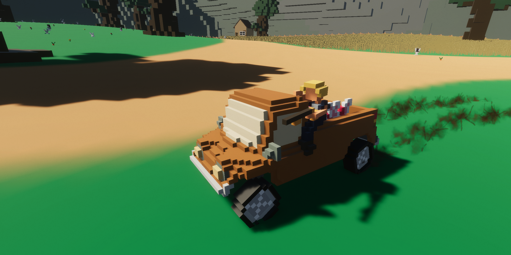

"Natural" Selection
Doomsday takes the form of cute, innocent bunnies. The world was not ready for this insurmountable population of fluffballs. Many flee
in fear as they ravage the lands that humanity once called home. However, not all hope is lost, you've thought of the greatest
solution to this epidemic of cute and cuddly creatures.
Natural Selection was created during a 48 hour game jam at the University of Wisconsin Whitewater with the theme "Chain Reaction." Originally my group had planned games that involved pinball. I still do this day do not recall how this game idea came to fullition; however, this was the most fun I have ever had with a game jam.
The idea behind the game is simple. Your goal is to last as long as you can by running over the furballs. You lose once the bunny population reaches 1000. The catch is that the bunnies will evolve over time through Natural Selection. I will explain that further below.
Engine: Unity
Software Used: Visual Studio
Languages: C#
Timeframe: 48 hours
Status: Complete
Download here!
Natural Selection was created during a 48 hour game jam at the University of Wisconsin Whitewater with the theme "Chain Reaction." Originally my group had planned games that involved pinball. I still do this day do not recall how this game idea came to fullition; however, this was the most fun I have ever had with a game jam.
The idea behind the game is simple. Your goal is to last as long as you can by running over the furballs. You lose once the bunny population reaches 1000. The catch is that the bunnies will evolve over time through Natural Selection. I will explain that further below.
Engine: Unity
Software Used: Visual Studio
Languages: C#
Timeframe: 48 hours
Status: Complete
Download here!
My Contributions
Genetic Algorithm

My biggest contribution was creating the game's genetic algorithm which will evolve the bunnies over time. When making this algorithm, I began researching various groups of animals to see how they evolve over time and with what traits. I decided to make the alogithm with a mix of realism and comedy.
The bunnies have a few features. First, bunnies will search for carrots throughout the map to satiate their hunger. The bunnies will also begin with randomized genes from my algorithm and will search for mates to cross over or advance their traits. Due to this, new families of bunnies will generate with various traits or different values. I realized early on that in order to really see the progression of natural selection that I needed to have an evolve mechanic as well. Whenever a new bunny is born, there is a small chance that it's traits will be random from it's parents.
The traits that the bunnies have are as followed:
The behaviors that the bunnies could have are as followed:
As an example, a bunny with higher intelligence will have a higher chance of changing its behavior. If you come near that bunny, it will have a higher chance of fleeing. In order to mate, the bunny needs to be satiated, so a bunny with a larger ear-size will find food faster and perhaps give birth at a higher rate.
As another example, if you run over a family of bunnies with a slow speed, over time there will be more bunnies with a higher speed than lower speed simply due to natural selection. You are the predator, and so you are the reason that a change occurs.
When a female bunny gives birth, it takes its fertility trait and will make a random amount of children. The higher the fertility rate is, the more bunnies that could be born. When researching, I found that the highest recorded child count from one birth was 15 from one female bunny. With 15 being the highest amount possible, the average female bunny in my game will spawn roughly 3 - 7 children from each birth. This is just an average amount, as it is also possible to give birth to no children.
Male bunnies will need to find a mate in order to begin a new line of children. To do this, male bunnies will want to have a higher ear-size to detect female bunnies near them. One thing to note: while male bunnies can not give birth, they still have their own pregnancy duration trait. This is because while they may not be able to give birth, they still hold onto their parent's previous genes/traits, and can pass down those traits to their children.
Carrots
As stated previously, the bunnies require carrots to be satiated so they can give birth to more children. I made a simple method that takes a point on the terrain (including it's Y value) and plants a carrot. The carrot will then take roughly 30 seconds to grow to its mature state when it will be ready to be chomped by a cute bunny. I installed a simple coroutine to increase the carrot's size over time while it is maturing.
Story Time
My roommate Jake and I both have taken audio courses in the past and we both felt it was necessary to include fun and entertainment in the truck by installing a radio. Since Jake had access to the library where all the audio equipment was located, we decided to venture over there at about midnight. When we arrived, we began to plan what we wanted to create. We both agreed that we wanted to include a news broadcast of the bunny situation, and we have made several "skits" of two news people: One being Jimmy, the news anchor with a "God complex," and the second being Joe, the weatherman/interviewer who hates his job and is down on his luck.
We spent about four hours in the library coming up with a script for both of us to follow, and we created the script as a way to explain the game to the player, without the player needing to use a tutorial or reading a summary. We then mastered the audio, added EQ and compression. I added a dramatic music that would play whenever Jimmy spoke, and have it cut harshly whenever Joe would speak, which added to the comedy of the audio file. We then finally decided to end the night there.
Come the following day (roughly 5 hours later), I found my roommate adding more to the audio file. He had the idea to have Joe inside of a helicopter watching the whole situation of the bunny epidemic. He then modeled a helicopter for me to animate and have move around the whole map. The radio of the car starts with this interview with Jimmy and Joe. However, the player has access to several channels of music that they can change; the default being hard metal (and all music I believe was royalty free).
Various Pictures
